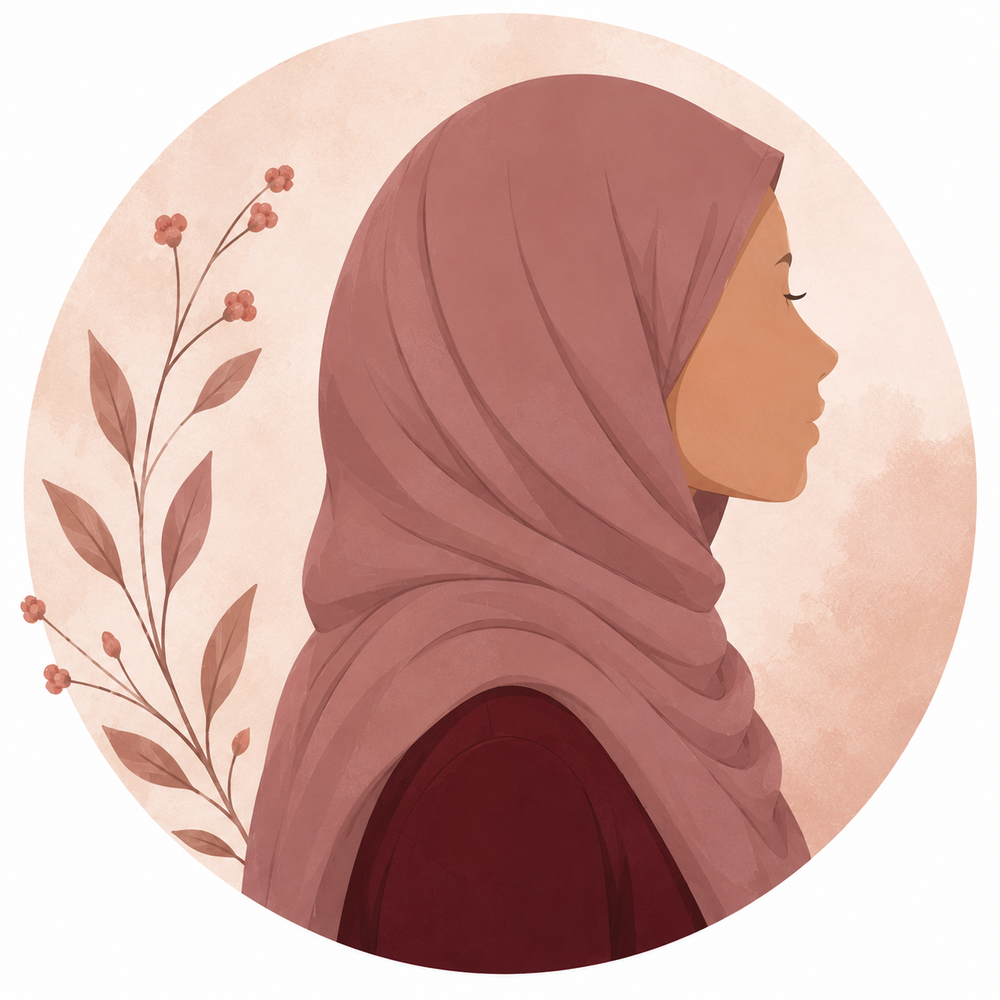
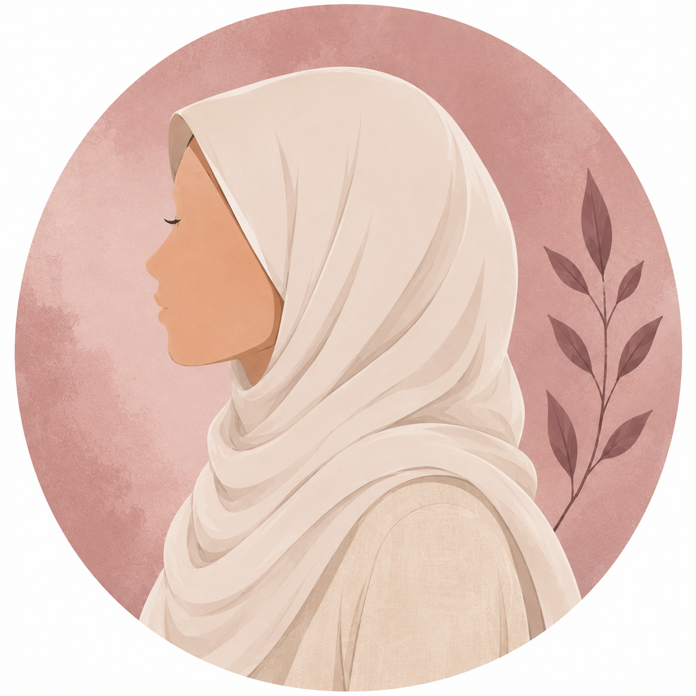
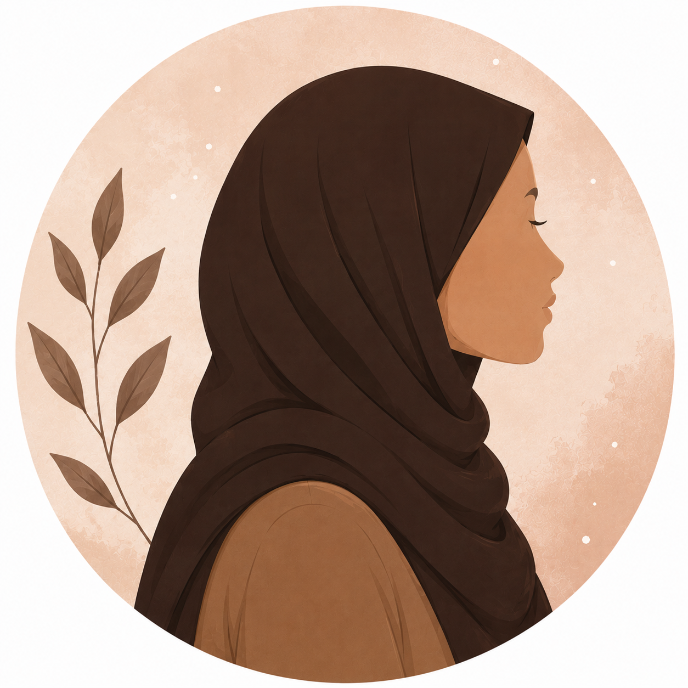
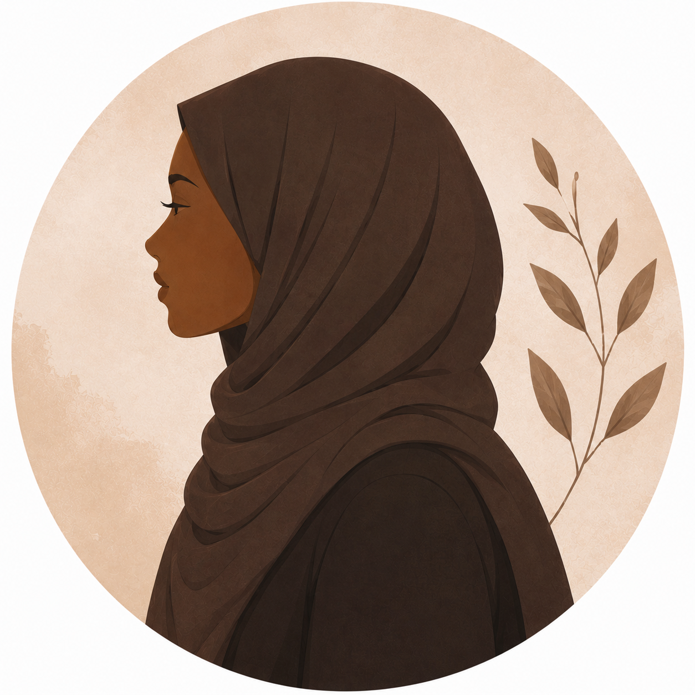
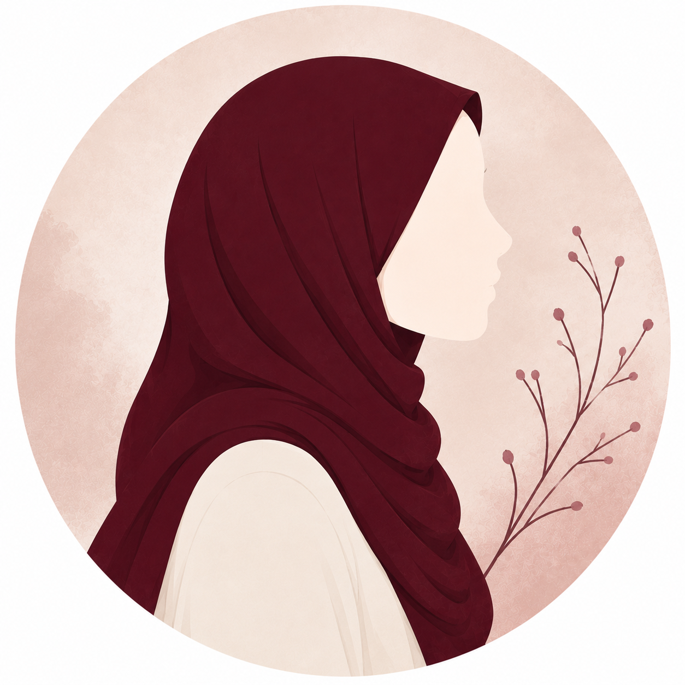

“Volunteering was always a dream of mine, helping people, sharing life with those who truly deserve it, it makes me feel important, good deeds in both life and afterlife.”

“I help for the sake of putting smiles on brothers and sisters as prophet Muhammad said ‘Every act of kindness is charity.’”

“Volunteering is always a big step in helping change the world, I want to be the difference.”

“Volunteering isn't only for others sake, it makes me a better human daily by remembering how human we truly are in need for one another, I feel different and valid.”

“I believe we need to be the change we wish to see.”